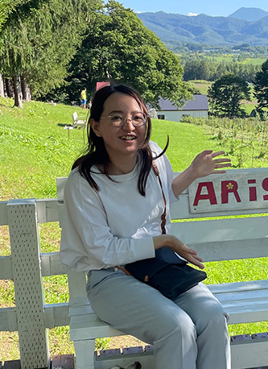

Profile
- 
-
島村 素良 - Shimamura Sora -
北海道出身・就職を機に上京。2022年4月〜現在は静岡に在住しています。 趣味は、漫画を読む 絵を描く サウナ パン作り 洋裁です。 何かを作ることが好きです。
インターネットアカデミーのWebデザイナーコース＋JavaScript講座を2021.9~受講しWebデザインを勉強しています。
Webデザインに興味を持ったっきかけ 一昨年ほど前にコロナの影響で一度仕事が休みになり、このままでいいのか不安を感じたことが勉強を始める大きなきっかけとなりました。ITは今後も成長し続ける分野です。その知識を身につけ私自身も時代と共に成長していきたいと思いました。
Skillできること
-
基本的なマークアップや理解しコーディングができます。わかりやすい書き方を心がけています。 -
基本的的な装飾、疑似要素・アニメーション動きを付けの実装ができます。効率の良い書き方模索しながら日々勉強しています。 -
Javascriptの書き方の理解・修正と、JQueryでの動作をつけることができます。 -
主に写真の編集、デザインカンプ、バナー作成の際に使用しています。 -
簡単なアイコン作成・編集する際に使用しています。 -
主にデザインフレーム作成時やデザインカンプなど、デザインの枠組みを設定し決定した後に使用しています。
Future
-
UI/UXを理解し、デザインの幅を広げられる人材を目指しています。 デザインの面では私の好みなど関係なく可愛いからかっこいい、カントリーテイストから近代的なテイストまで、いい意味で仕事を選ばない人を目標にしています。なので様々な仕事に携わりたいと思っています。 勉強中ではありますが、UI/UXを理解し実践したいと思っています。売上○％UPなど、具体的なゴール達成に向けたサイト運営をしていきたいです。
-
デザインで想いを伝えられる人を目指しています。 象徴的ではなく具体的なデザイン作成と提案をすること目標にしています。これまでなんとなくで済ましてしまうことの方が多く、説得力のないデザインをしていたんだなあと勉強を始めてから実感しています。芯があるデザインで見る方にデザインを伝えることができ、さらに見た方の行動につながるデザイナーになりたいです。